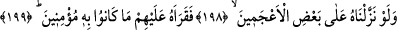
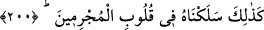
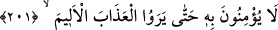

onun zikrinin öncekilerin kitaplarında da bulunması, Abdullah b. Selam ve benzerlerinin
onu zikredilen sıfatları ile kendi kitaplarında bulmaları ve O’na indirenin kim olduğunu
bilmeleri, işte onların bütün bu bilgileri Kur’an’ın doğruluğuna ve Rasûlullah (s.a.)’in
hak olduğuna delil değil midir? Âlim birisinin bir şey üzerine şâhitliği, o şeyin hakikat
olmasını gerektirir.
Rivâyete göre Mekke halkı, Muhammed (s.a.) ve peygamberliğini sormak için Medine
yahudilerine adam gönderdiler. Yahûdiler: “Şimdi O’nun zamanıdır. Biz Tevrat’ta
O’nun vasıflarını ve özelliklerini buluyoruz.
198-199. Biz onu Arapça bilmeyenlerden birine indirseydik de, bunu onlara o
okusaydı, yine ona iman etmezlerdi.
“Biz onu” yani Kur’ân’ı hayret verici ve mu’ciz nazmıyla “Arapça bilmeyenlerden”
Arapça konuşamayanlardan “birine indirseydik de,”
Doğru bir okuyuşla ve harikulâde bir şeklide “Bunu onlara o okusaydı,” okunanın
i’câzına okumanın i’câzı da eklendiği halde aşırı inatlarından ve şiddetli
tekebbürlerinden dolayı “yine ona iman etmezlerdi.”
et-Te’vîlâtü’n-Necmiyye’de der ki: “Allah’ın kudretinin ve hikmetinin kemâline işâret
etmektedir ki, eğer Allah bu kitabı Arapça olarak Arapça bilmeyen birine indirseydi,
elbette ona bir anda Arap dilini öğretmeye, ona Kur’ân’ın mânâlarını ve hikmetlerini
kavratmaya kâdirdi. Nitekim Âdem (a.s.)’a bütün isimleri öğretmiştir. Bununla beraber
münkirler, Allah’ın hikmetinin kemâlini ortaya koymak üzere bu mucizenin zuhûrundan
sonra da ona îman etmediler.
200. Onu günahkârların kalplerine böyle soktuk.
“Onu” yâni Kur’ân’ı “günahkârların” yani Kureyş müşriklerinin “kalplerine böyle”
eşsiz bir şekilde “soktuk” da onun mânâlarını ve i’câzını anladılar.
201. Onun için, acıklı azâbı görünceye kadar ona iman etmezler.
Bu âyetle onların inadı açıklanmaya başlanmaktadır. “Onun için,” îmanın kendilerine